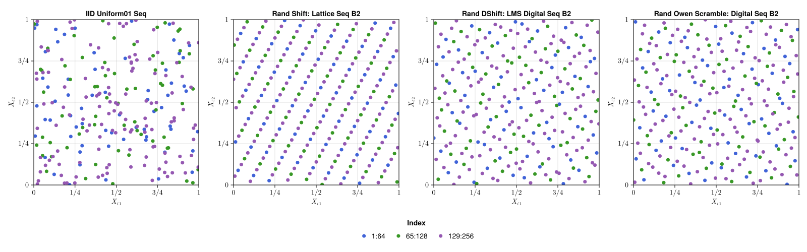
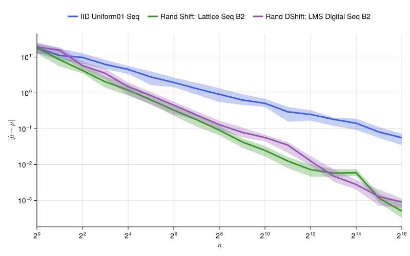

Quasi-Monte Carlo Generators
Julia version of Dirk Nuyens' Magic Point Shop.
See the Tutorial for instructions on how to use this package.
Quasi-Random Generators
QMCGenerators.jl implements quasi-random (low discrepancy) sequence generators. Quasi-random points are carefully coordinated in a dependent manner to more evenly fill $[0,1]^s$ compared to pseudo-random (independent) points.
This package implements two flavors of quasi-random sequences: Lattice rules and digital nets, both in base 2. Independent randomizations may be applied to base sequences via random shifts for Lattices and random digital shifts for digital nets.

Notice the gaps and clusters of the above pseudo-random points compared to the more even coverage of quasi-random points. The implemented quasi-random sequences are extensible, meaning you may increase the sample size through powers of two to better fill the space. Above, each plot starts with $2^6$ blue points. Doubling the sample size to $2^7$ adds the green points. Doubling again to $2^8$ samples adds the purple points.
Quasi-Monte Carlo
Monte Carlo methods approximate the true mean
\[\mu = \mathbb{E}[f(X)] = \int_{[0,1]^s} f(x) \mathrm{d} x\]
for $f: [0,1]^s \to \mathbb{R}$ and $X \sim \mathcal{U}[0,1]^s$ by the sample mean
\[\hat{\mu} = \frac{1}{n} \sum_{i=0}^{n-1} f(X_i)\]
where $X_0,X_1,\dots \sim \mathcal{U}[0,1]^s$. If $X_i$ are chosen to be pseudo-random, then the sample average is a Simple Monte Carlo approximation with error $\mathcal{O}(n^{-1/2})$. If instead we choose $X_i$ to be quasi-random then the sample average is a Quasi-Monte Carlo approximation with error approaching $\mathcal{O}(n^{-1})$.

The above example approximates $\mu = \mathbb{E}[g(T)]$ where $g: \mathbb{R}^s \to \mathbb{R}$ is the Keister function
\[g(t) = \pi^{s/2} \cos( \lVert t \rVert_2)\]
and $T \sim \mathcal{N}(0,I_s/2)$ in dimension $s=7$. To make this Quasi-Monte Carlo compatible, we set
\[f(x) = g(\Phi^{-1}(x)/\sqrt{2})\]
where $\Phi^{-1}$ is the inverse CDF of $\mathcal{N}(0,1)$ applied elementwise. This transform satisfies
\[\mu = \mathbb{E}[f(X)] = \mathbb{E}[g(T)]\]
where $X \sim \mathcal{U}[0,1]^s$ as desired.
References
- Kuo, F. Y., & Nuyens, D. (2016). Application of quasi-Monte Carlo methods to elliptic PDEs with random diffusion coefficients: a survey of analysis and implementation. Foundations of Computational Mathematics, 16, 1631-1696.